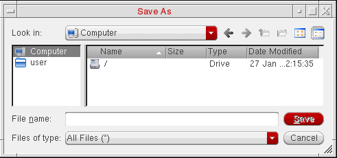
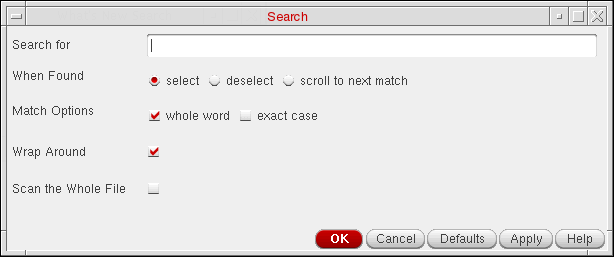
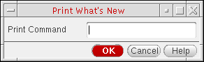

13
Using Text Windows
Text information appears in text windows. Some examples of text information include design information you request or results of processes you run in read-only mode.
You can perform the following tasks:
- Saving a Text File
- Searching the File for Specific Text
- Printing the File
- Refreshing the File
- Viewing Product Version Information
- Closing a Text Window
See also Saving Changes if you want to turn off the appearance of the What’s New text window every time you start Cadence software.
Saving a Text File
To save the text file, do the following:
-
Choose File – Save As.
The Save As form appears.
 -
(Optional) Use the navigation tools (drop-down combo box and toolbar buttons) to specify the directory to which you want to save the text file.
If you do not specify a directory path, your home directory is used. - In the File name field, type a name for the text file.
- Click Save.
The program writes the specified text file. You can edit the file using a text editor.
Searching the File for Specific Text
To search the file for a specific text string, do the following:
-
Choose Edit – Find.
The Search form appears.
 - In the Search For field, type the search string.
- (Optional) Select the When Found option.
- (Optional) Select one or more of the Match Options.
- (Optional) Select Wrap Around to search wrap around text.
- (Optional) Select Scan the Whole File to highlight all occurrence of the search string in the whole file.
-
Click Apply to the occurrences of the specified search string.
- If the specified search string can be found in the text window, the located string is highlighted. Each time you click Apply, the next occurrence of the specified string in highlighted until either the end of the text file is reached (if you selected no for Wrap Search) or you click OK (the next step).
- If the specified search string cannot be found in the text window, or if you selected no for Wrap Search and you are at the end of the text window and there are no more occurrences of the specified search string, a Pattern not found message appears in the CIW output area.
The Search form remains open. - Click OK to close the form.
Printing the File
To print the contents of a file in a text window, do the following:
-
Choose File – Print.
The Print Information form appears.
 - In the Print Command field, type the UNIX print command plus the name of the file in which you placed (using the Save As command) the data.
- Click OK.
The software sends the contents of the named file to the specified printer.
Refreshing the File
To refresh the contents of the current file, do the following:
cds.lib and other technology files.Viewing Product Version Information
To view product version information, do the following:
Closing a Text Window
To close a text window, do the following:
Return to top